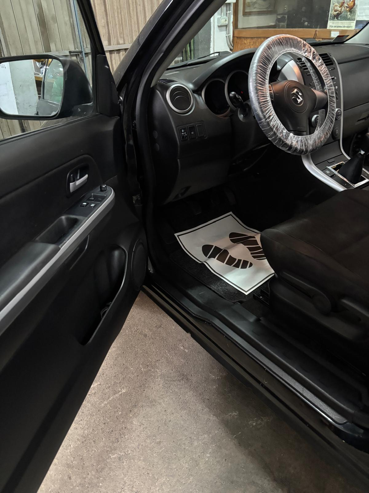
Interior básico
Limpieza de mantenimiento: aspirado, salpicadero, plásticos y cristales.
Desde 60 €Limpieza, protección y mucho más. Cuidamos tu vehículo con atención al detalle, productos de calidad y resultados reales.
Servicios adaptados al estado de tu coche, con fotografías de trabajos reales realizados por LCM.

Limpieza de mantenimiento: aspirado, salpicadero, plásticos y cristales.
Desde 60 €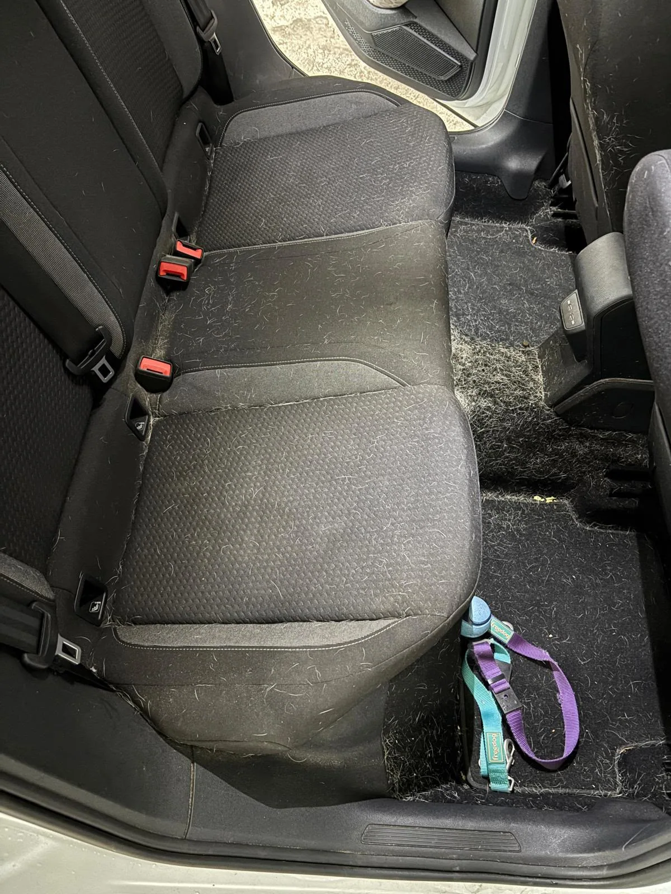
Antes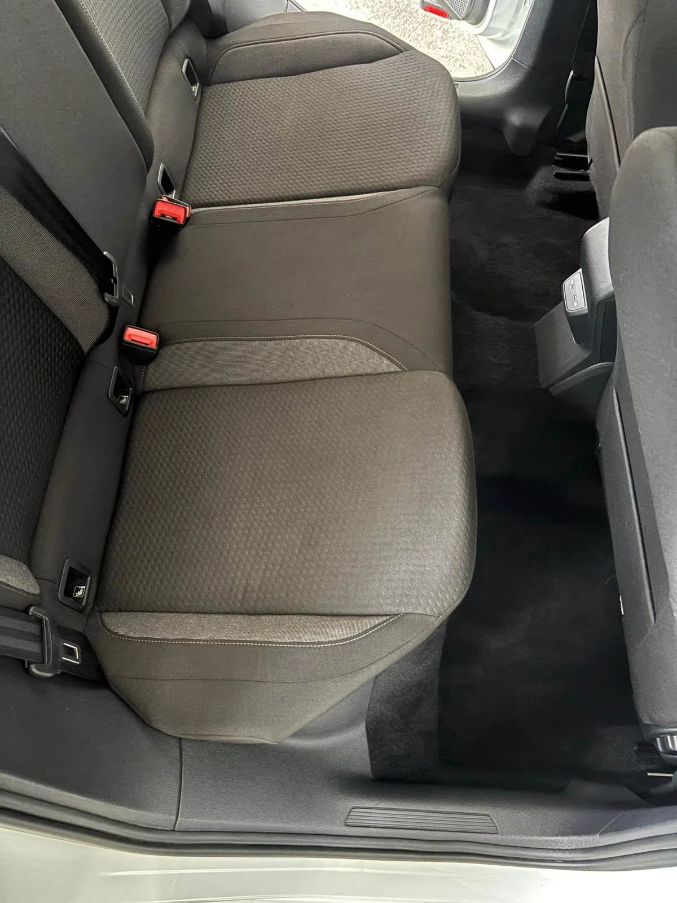
DespuésLimpieza profunda del habitáculo, tapicerías y suciedad difícil, incluidos pelos de mascota.
Desde 95 €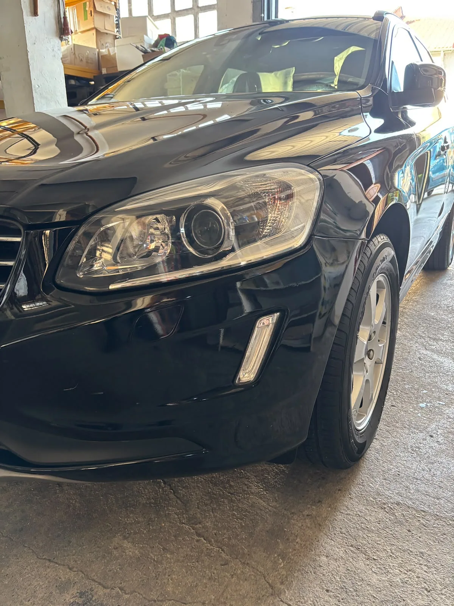
Carrocería, llantas, neumáticos y acabado cuidado para recuperar el brillo.
Desde 65 €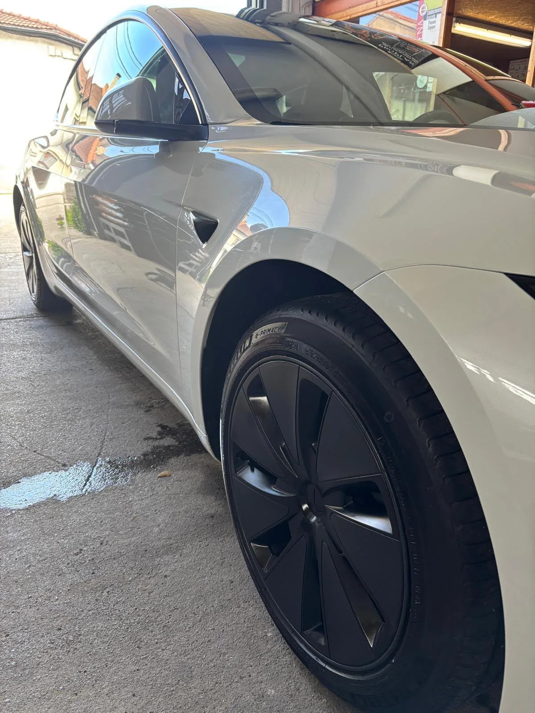
Interior básico + detallado exterior: un coche cuidado por dentro y por fuera.
Desde 100 €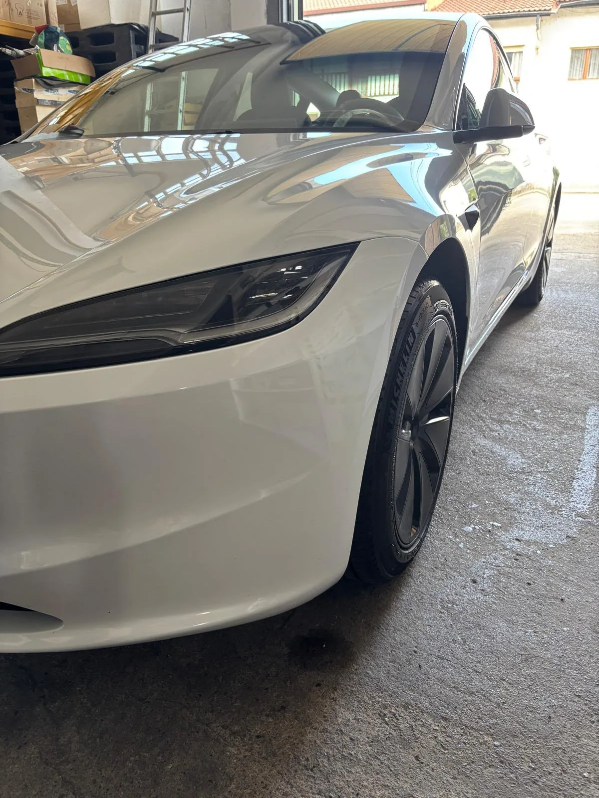
Limpieza interior profunda con tapicerías + detallado exterior.
Desde 150 €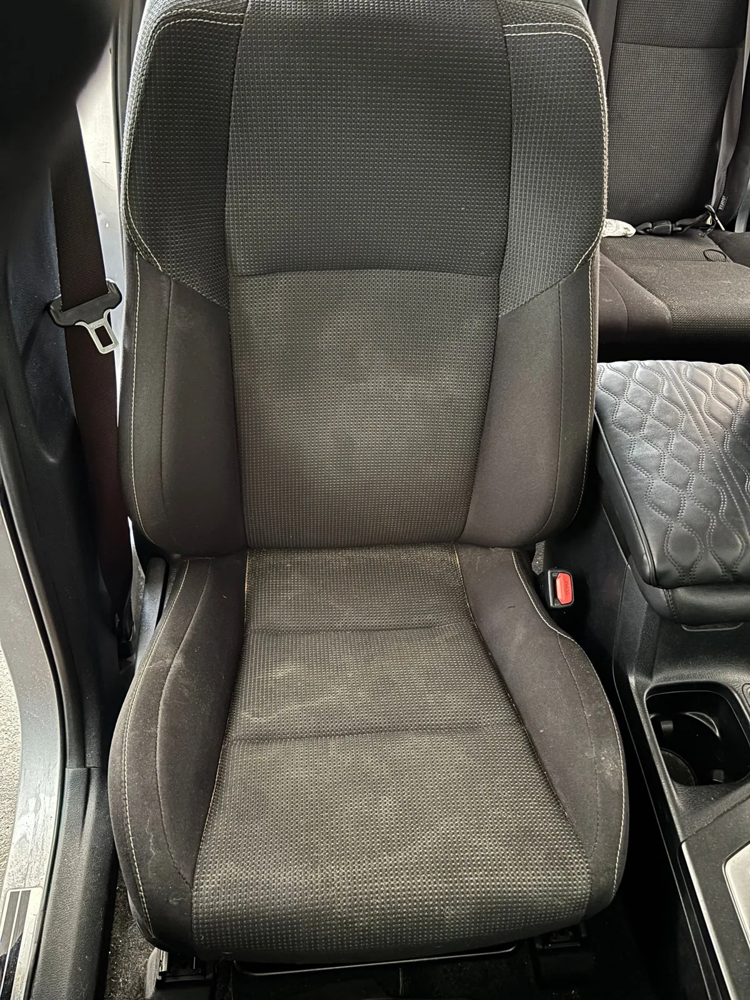
Antes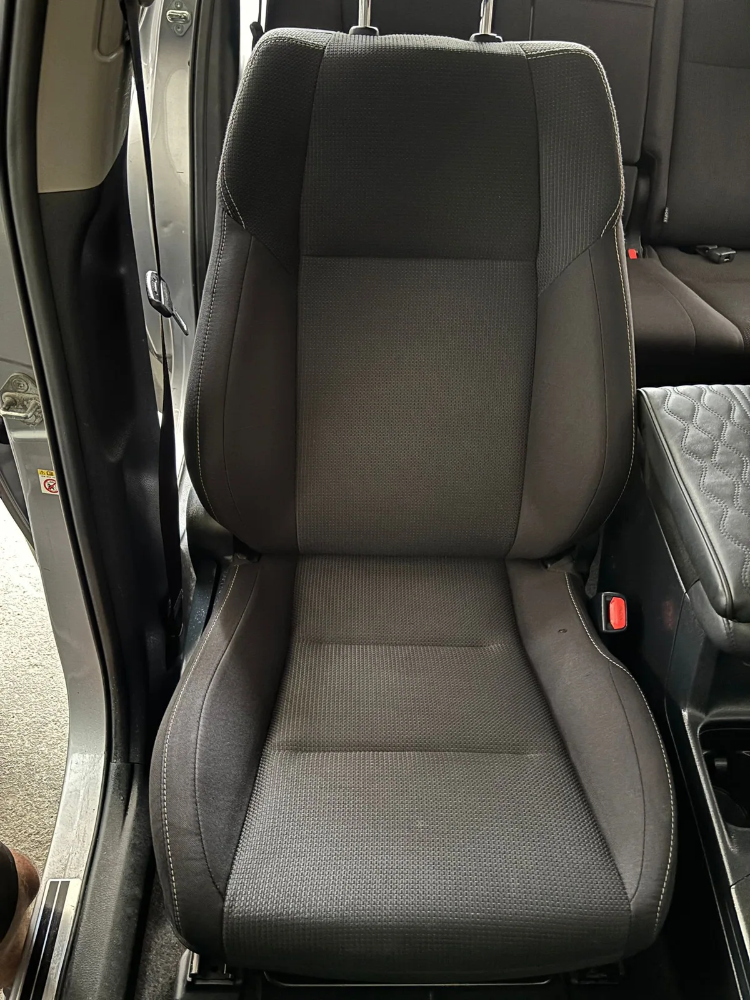
DespuésLimpieza específica de asientos y tejidos con resultados visibles.
Desde 25 € / asiento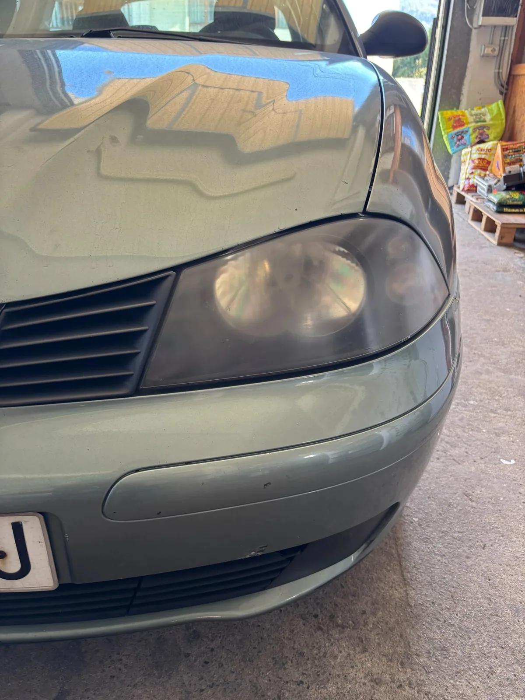
Antes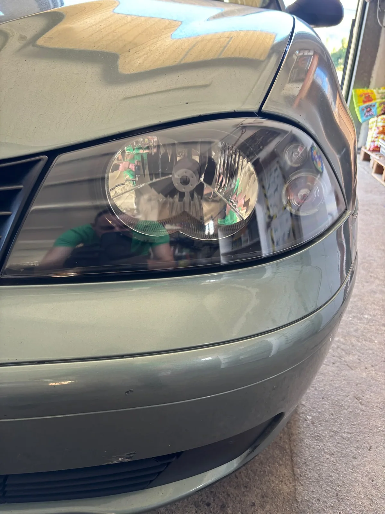
DespuésRestauración de ópticas opacas y amarillentas.
Desde 50 €Evaluación del origen del olor, limpieza y tratamiento adaptado.
Desde 120 €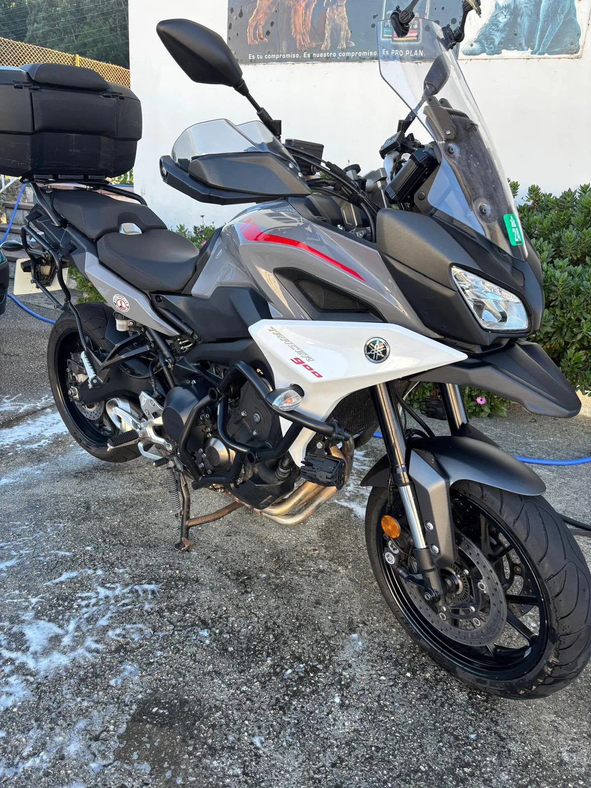
Limpieza detallada de superficies y componentes sensibles.
Desde 50 €Precios orientativos desde, según tamaño y estado del vehículo. Suciedad alta +10 %; extrema +20 %. Presupuesto antes de realizar el servicio.
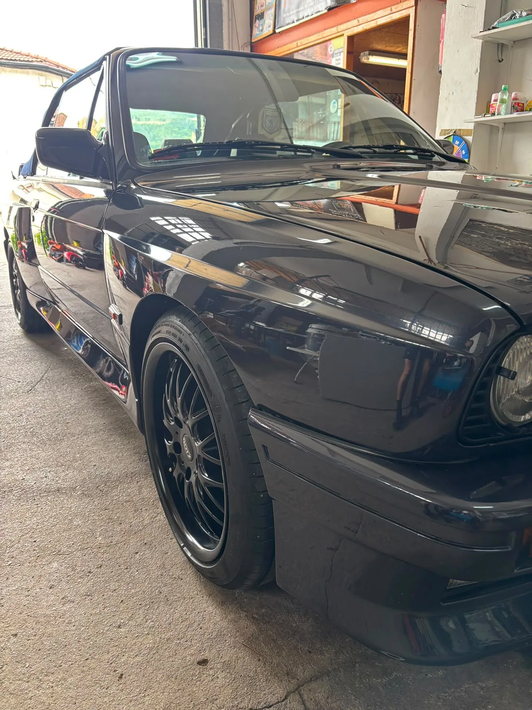
Las fotografías de esta web son de vehículos que hemos trabajado. Desde interiores con pelos de mascota hasta exteriores, tapicerías y recuperación de faros.
Ver más trabajos en Instagram ↗Servicio de limpieza y detailing de vehículos en Ampuero, Cantabria, con atención personalizada y cita previa.
Cuéntanos qué vehículo tienes y qué servicio necesitas. Te ayudamos a elegir la mejor opción.